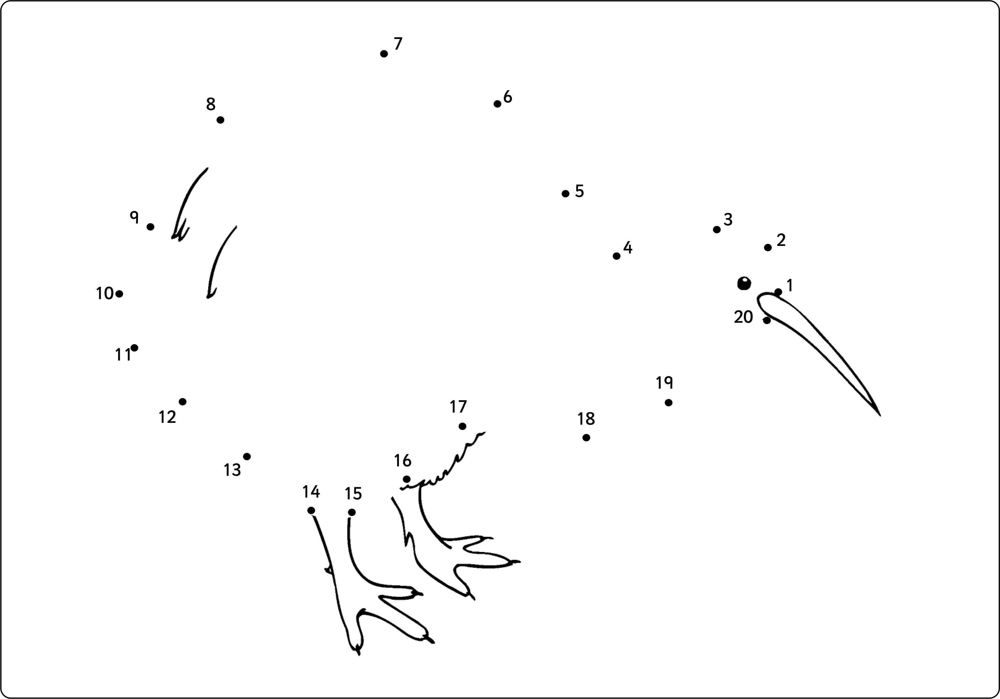
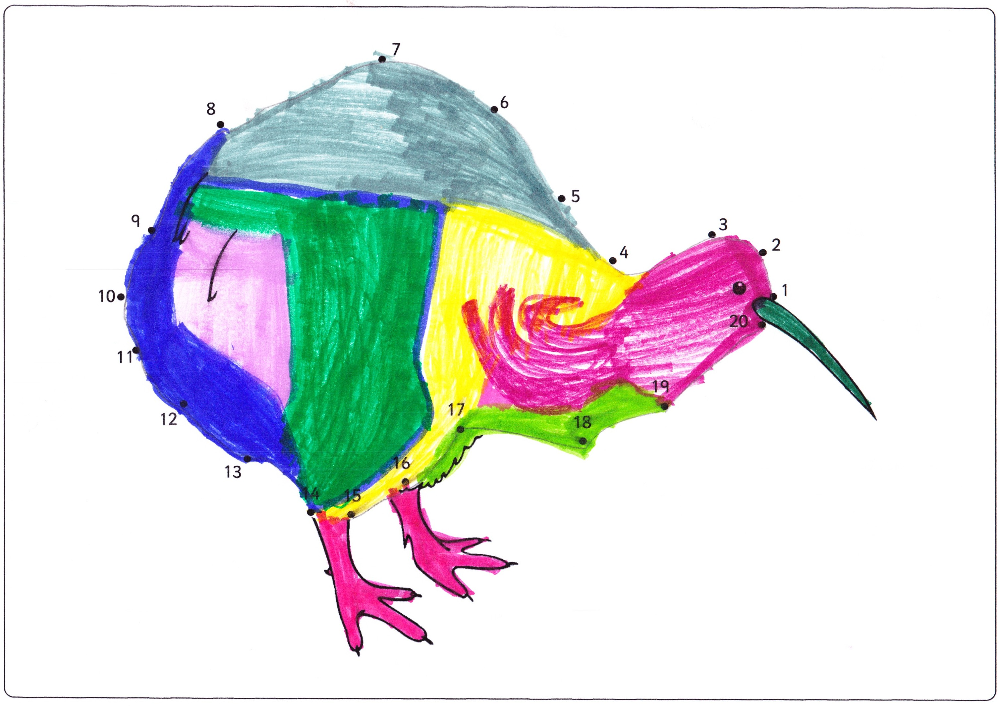

Today, I (Roni Zeiger) had the privilege of speaking at RWJF’s #Data4Health conference in San Francisco. Here I’ll share a written version of my brief talk and my two slides.
I love data. In some contexts, that might sound like a confession. Obviously not here. I grew up loving math, then science. I decided the most interesting secrets were probably hidden in biology, in particular molecular biology.
I worked in labs in college, learned how to splice DNA, to make antibodies that were part mouse and part human. It was awesome. It was also a little lonely. The lab was a place where I was looking down more than looking up.
I then discovered medicine, and found a place where I could do science and stories at the same time. Data and humanity… but oh man, the data!
My Palm Pilot was always with me, and I learned how to write computer programs. You see, the medical center was producing so much data, we just needed better tools to analyze it. I also ended up getting a degree in medical informatics and cemented my identity.
I still saw patients, something about that kept me grounded, especially when I went to work at Google.

Google… holy cow, best data ever. I analyzed all the health questions people across the globe were putting into the Google search box. Symptoms, diagnoses. Drugs, supplements. Results of a scan. Good news. Bad news.
And I started seeing that those searches represent people. Data are tiny shadows, projections of rich complex stories.
Sometimes you can connect the dots, see how a series of searches reveals a new life, or tragedy, hope or fear. And there is SO much more in between those data points.
Even a child, perhaps especially a child, can show us that. (In this case, one of my children.)

To be clear: we need more data, and we need better access to data. And we need the stories that bring them to life, that give them color and context.
The data may hold the answers, but stories tell us which questions to ask and stories tell us why the answers matter.


{kind=link}
{kind=link}
{kind=link}
{kind=link}